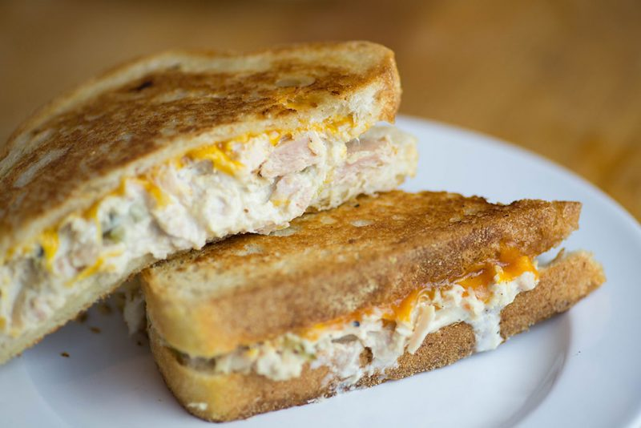

Tuna Melt Recipe

Description
This tuna melt gives you a protien packed sandwich which I particularly enjoy as a heavy snack as part of my bulking diet. It is packed with a lot of calories that will help with gaining all the muscle you want to gain.
On top of being great for bulking, it is very tasty. The different flavours brought by the different ingredients complement each other and produce a sandwich that will leave you satisfied. Enjoy!
Ingredients
- White bread
- A can of tuna
- Grated cheese
- 2 eggs
- Mayonnaise
- Butter
- Green pepper
- Onion
- Salt
- Black pepper
Steps
- Open the can of tuna. Drain the vegetable oil and put the tuna into a bowl
- Cut the onion and green pepper into small cubes and add the vegetables into the bowl with tuna and mix
- Add a pinch of salt and black pepper to the mixture of tuna and vegetables and mix
- Put the bowl into a microwave for 1 minute
- Add mayonnaise and set the bowl aside
- Fry the eggs sunny side up
- Take 2 slices of white bread and put the tuna mixture, grated cheese, and 1 fried egg between the slices of bread
- Lightly spread the butter on the outside slices of the bread
- Repeat this step with 2 more slices of bread
- Toast the the sandwich in a pan to make it golden brown
- Enjoy!